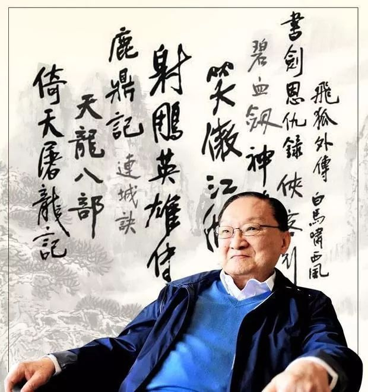

金庸
原名查良镛，1924年出生，武侠小说大家

长篇小说
| 作品名称 |
主角 |
| 天龙八部 |
萧峰等 |
| 射雕英雄传 |
郭靖等 |
| 神雕侠侣 |
杨过等 |
| 倚天屠龙记 |
张无忌等 |
小说版本
- 连载版
- 三联书店版
- 新修版
意义
金庸希望透过武侠小说传达的主旨有：爱护尊重自己的国家民族，也尊重别人的国家民族；和平友好，互相帮助；重视正义和是非，反对损人利己；注重信义，歌颂纯真的爱情和友谊；歌颂为正义奋斗奋不顾身；轻视争权夺利、自私可鄙的思想和行为。武侠小说不会只是让读者做“白日梦”，沈溺在伟大成功的幻想里，金庸期望读者在幻想的同时，能想像自己是个好人，努力做各样好事，想像自己要爱国家、爱社会、帮助别人得到幸福。又因为做了许多好事，以致于得到所爱之人的欣赏和倾心。
作品轶事
-
金庸第一部小说《书剑恩仇录》，据说是金庸自小在浙江家乡流传的故事（见后记）。
-
《连城诀》后记中陈述金庸该部小说灵感来源，乃来自儿时家乡长工和生少年时期悲惨经验（类似大仲马的《基度山恩仇记》情节），原本被打成残废、父母气死、未婚妻改嫁凶手，而凶手也准备在牢中害死他；后来，和生获金庸祖父查文清搭救，于是便在查家任长工，但金庸的父母都不会太差使他。金庸小时候常跟他在一起，却始终不知道他姓名，上述事件，乃和生有次病重自以为将死时告诉金庸的往事。
-
据说，金庸写小说之同时，曾经喜欢某女明星被拒（应该说无下文，对方应该是电影女星夏梦，金庸认识时已作为人妇）。因此像小说中部分角色，都有类似经验，诸如令狐冲、游坦之、韦小宝、余鱼同。
-
著名科幻、武侠小说家倪匡先生是金庸的好友。1965年曾在金庸外游欧洲时代笔《天龙八部》，至今引以为豪，然金庸修订后已全部去除（但阿紫眼盲仍未更动，仅由金庸将尔后情节略作发挥与修改）。